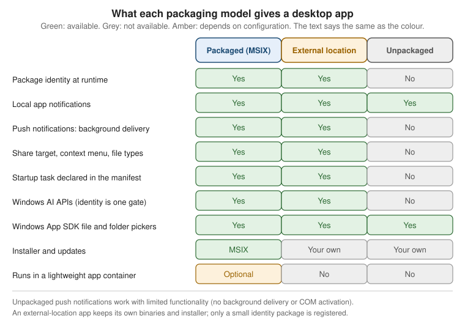

Windows Platform Integration
|
This content was generated with the assistance of AI and should be verified against the official documentation before being relied on in production. |
A desktop window is only the visible part of an app. Around it sits a ring of operating system features: a toast in the notification centre, a jump list on the taskbar button, a tray icon, a "start with Windows" switch, a place in the Share sheet, a widget on the Widgets Board, an on-device language model. Most of these features have a hidden precondition: Windows has to know which app is calling. That identity is called package identity, and whether your app has it depends on how the app is installed, not on which UI framework it uses. This page explains the three packaging models, lists what package identity unlocks and what works without it, and then walks through the integration points one by one with Bookshelf Desktop examples.
The page was written against these versions, current in October 2026:
-
.NET 10 LTS, latest patch 10.0.13, with C# 14. .NET 11 is at release candidate 2 (general availability is expected 10 to 13 November 2026); nothing here depends on a .NET 11 change.
-
Windows App SDK 2.5.1 (stable channel, released 16 September 2026). Windows App SDK 1.8 is in maintenance and reaches end of servicing on 24 September 2026, so new work should start on 2.x. The SDK stays backward compatible to Windows 10 version 1809, but Microsoft supports it only on Windows releases that are themselves still in support.
-
Visual Studio 2026 18.11.1 and CommunityToolkit.Mvvm 8.4.2 for the view-model code.
-
Windows 10 version 2004 (build 19041) is the floor for packaging with external location. The Windows AI APIs need Windows 11 and, for most APIs, a Copilot+ PC.
The Three Packaging Models
A Windows app reaches the user in one of three shapes. The shape decides whether the process has a package identity, a record Windows keeps about the app that says "this process belongs to package X from publisher Y".
| Model | What is installed | Identity | Installer and updates |
|---|---|---|---|
Packaged (MSIX) |
One |
Yes |
MSIX is both package and installer. Updates come from the Microsoft Store, an App Installer feed or your deployment tool. |
Packaged with external location (also called a sparse package) |
Your existing app, installed by your existing installer in a folder you choose, plus a tiny identity package that holds only a manifest. The identity package points at the install folder. |
Yes |
Your installer and your update mechanism, unchanged. You additionally register the identity package. |
Unpackaged |
A plain Win32, WPF or WinForms app in a folder, or installed by an MSI or EXE installer, XCopy or ClickOnce. |
No |
Whatever you chose: MSI, EXE, ClickOnce, scripts. |
Source: Packaging overview
Three clarifications keep the vocabulary straight:
-
MSIX is the format; package identity is the capability. An MSIX package carries identity automatically. A sparse package is also an MSIX, but it contains no app binaries, so it is only a way to hand identity to binaries that live elsewhere.
-
Packaging with external location needs Windows 10 version 2004 (build 19041) or later. Below that build the attribute that allows external content does not exist, so an installer that also runs on older Windows should check the OS version and skip registration.
-
The UI framework does not decide this. A WinUI 3 project template produces a packaged app by default, but you can publish WinUI 3 unpackaged, and WPF and WinForms apps can be packaged with a packaging project or the single-project MSIX tooling. The Project Structure and Build page of this section shows the project-file switch (
WindowsPackageTypeset toNone) that makes a Windows App SDK app unpackaged.
What Package Identity Is
Package identity is a five-part tuple that uniquely names a package: Name, Version, Architecture, ResourceId and Publisher. Two strings derived from it appear constantly in tooling and logs:
| Term | Composition | Used for |
|---|---|---|
Package Full Name |
Name, version, architecture, resource id and publisher id joined by underscores |
Naming one exact build of one package. |
Package Family Name (PFN) |
Name and publisher id only, for example |
Scoping data and security across versions. Application data belongs to the family, not to a version. Push notification registration maps a PFN to an Azure application. |
Publisher id |
A fixed 13-character, lowercase base-32 hash of the publisher subject |
Keeping file names, registry keys and URLs free of the awkward characters that an X.509 subject can contain. |
ApplicationUserModelID (AUMID) |
Package family name plus the application id declared in the manifest |
Identifying an application inside a package. Windows uses it to group windows on the taskbar, route notifications and manage app lifecycle. |
The Publisher string in the manifest must match the subject of the certificate that signs the package, and the
publisher field is the one part of identity that is compared case-sensitively. A package can declare from zero to one
hundred applications, which is why identity (the package) and the AUMID (the application) are separate concepts.
What Package Identity Unlocks
Microsoft Learn keeps a single list of features that need identity at runtime. The table below combines that list with the other pages in this section. "Needs identity" means the feature only works when the process is packaged or packaged with external location.
| Feature | Why it needs identity | Packaged / external | Unpackaged |
|---|---|---|---|
Background tasks and app services |
Windows must know which app to wake or which service to expose. |
Yes |
No |
Push notifications (background delivery and COM activation) |
The notification service routes by package family and activates the app by COM class. |
Yes |
Foreground only, limited |
Share target |
The Share sheet lists apps that declare themselves in the manifest. |
Yes |
No |
Custom context menu extensions, manifest-based file type and protocol associations |
These are manifest extensions that Windows reads at install time. |
Yes |
No |
Startup tasks |
A manifest extension that appears in Settings and Task Manager as a startup app. |
Yes |
No |
Windows AI APIs (Phi Silica, OCR, imaging) |
Identity is one requirement; hardware, Windows version, SDK version, manifest capability and region also apply. |
Yes |
No |
Windows Widgets provider |
Learn describes the provider as a packaged Win32 desktop app (or a PWA). |
Yes |
No |
Local app notifications (Windows App SDK |
The SDK registers a COM activator for you when the app is unpackaged. |
Works |
Works |
Source: Modernize packaged desktop apps
The practical reading is: local toasts, file pickers, the WPF jump list and tray icons work for any app. Push, share, startup tasks, widgets and the AI APIs need identity. The figure below shows the same comparison as a matrix.

Source: Packaging overview
Detecting Identity at Runtime
An app that ships both ways, or that adds an identity package after installation, needs to ask whether it has
identity before calling an identity-gated API. Learn recommends the native GetCurrentPackageFullName function for
this. The Windows API returns error 15700 (APPMODEL_ERROR_NO_PACKAGE) for a process without a package, and
ERROR_INSUFFICIENT_BUFFER (122) when a package exists and the buffer is too small, which makes a zero-length
probe enough.
using System.Runtime.InteropServices;
namespace Bookshelf.Desktop.Platform;
/// <summary>Answers "does this process have package identity?" without touching WinRT.</summary>
public static partial class PackageIdentity
{
private const int AppModelErrorNoPackage = 15700; // APPMODEL_ERROR_NO_PACKAGE
[LibraryImport("kernel32.dll")]
private static partial int GetCurrentPackageFullName(ref uint length, Span<char> name);
public static bool HasIdentity { get; } = Probe();
private static bool Probe()
{
uint length = 0;
int result = GetCurrentPackageFullName(ref length, Span<char>.Empty);
return result != AppModelErrorNoPackage;
}
}Source: Packaging overview (which points to the
Inside MSIX post "Is This a Packaged Process?" for canonical samples). The LibraryImport wrapper above is a
Bookshelf Desktop illustration; the error value 15700 is quoted from the Win32 header, not from the pages cited here.
Bookshelf Desktop uses that flag to decide, at startup, which features to register, so a single binary degrades gracefully when it runs from a ZIP file on a developer laptop.
Granting Identity to an Existing App
If Bookshelf Desktop already has an MSI or EXE installer and you want push notifications, a share target or the AI APIs without switching to MSIX, you register an identity package with an external location. The steps are:
-
Write a manifest for the identity package. It is an MSIX manifest, but it only carries identity and never changes how the app runs.
-
Build the identity package with
MakeAppx.exeand sign it. -
Add a small side-by-side manifest to your executable that names the package and application it belongs to.
-
Register the identity package from your installer, pointing it at the install folder.
Visual Studio automates much of this with the Windows Application Packaging Project and the Package with External Location extension; that route is recommended when a single application project needs identity, and it adds a visual manifest editor, a certificate wizard and register and unregister scripts. The manual route below suits builds outside Visual Studio or several executables sharing one identity.
The Identity Package Manifest
<?xml version="1.0" encoding="utf-8"?>
<Package IgnorableNamespaces="uap uap10"
xmlns="http://schemas.microsoft.com/appx/manifest/foundation/windows10"
xmlns:uap="http://schemas.microsoft.com/appx/manifest/uap/windows10"
xmlns:uap10="http://schemas.microsoft.com/appx/manifest/uap/windows10/10"
xmlns:rescap="http://schemas.microsoft.com/appx/manifest/foundation/windows10/restrictedcapabilities">
<Identity Name="BookshelfDesktop" Publisher="CN=Bookshelf Dev" Version="1.0.0.0"
ProcessorArchitecture="neutral" />
<Properties>
<DisplayName>Bookshelf Desktop</DisplayName>
<PublisherDisplayName>Bookshelf</PublisherDisplayName>
<Logo>Assets\storelogo.png</Logo>
<uap10:AllowExternalContent>true</uap10:AllowExternalContent>
</Properties>
<Resources>
<Resource Language="en-us" />
</Resources>
<Dependencies>
<TargetDeviceFamily Name="Windows.Desktop" MinVersion="10.0.19041.0" MaxVersionTested="10.0.26100.0" />
</Dependencies>
<Capabilities>
<rescap:Capability Name="runFullTrust" />
<rescap:Capability Name="unvirtualizedResources" />
</Capabilities>
<Applications>
<Application Id="BookshelfDesktop" Executable="Bookshelf.Desktop.exe"
uap10:TrustLevel="mediumIL" uap10:RuntimeBehavior="win32App">
<uap:VisualElements AppListEntry="none" DisplayName="Bookshelf Desktop"
Description="Bookshelf Desktop" BackgroundColor="transparent"
Square150x150Logo="Assets\Square150x150Logo.png"
Square44x44Logo="Assets\Square44x44Logo.png" />
</Application>
</Applications>
</Package>The attributes that matter, as the Learn page describes them:
| Element or attribute | Meaning |
|---|---|
|
The chosen name of the identity package. |
|
Must equal the subject of the certificate that signs the package. |
|
A version you cannot register twice. To reinstall the same version you must unregister it first. |
|
|
|
Must be |
|
|
|
Declared for Win32 compatibility. |
|
|
|
|
Linking the Executable to the Identity
The executable gains identity because its own application manifest names the package. Add an application manifest
file to the project (in Visual Studio: Add, New Item, Application Manifest File) and include the msix element:
<?xml version="1.0" encoding="utf-8"?>
<assembly manifestVersion="1.0" xmlns="urn:schemas-microsoft-com:asm.v1">
<assemblyIdentity version="0.0.0.0" name="BookshelfDesktop"/>
<msix xmlns="urn:schemas-microsoft-com:msix.v1"
publisher="CN=Bookshelf Dev"
packageName="BookshelfDesktop"
applicationId="BookshelfDesktop" />
</assembly>packageName and publisher must equal the Name and Publisher of the identity package, and applicationId must
equal the Id of the matching Application element. A mismatch registers fine but leaves the process without
identity (the troubleshooting table below lists the error code Learn associates with it).
Building, Signing and Registering
The build and signing commands read the certificate location and password from environment variables; never write them into the script or commit them.
# Pack the identity package. /nv skips validation of the file paths named in the manifest.
MakeAppx.exe pack /o /d .\identity /nv /p .\artifacts\BookshelfIdentity.msix
# Sign it. The certificate file and its password come from CI secrets or the developer's environment.
SignTool.exe sign /fd SHA256 /a /f $env:BOOKSHELF_PFX_PATH /p $env:BOOKSHELF_PFX_PASSWORD .\artifacts\BookshelfIdentity.msix
# Register it for the current user, pointing at the folder that holds Bookshelf.Desktop.exe.
Add-AppxPackage -Path .\artifacts\BookshelfIdentity.msix -ExternalLocation "C:\Program Files\Bookshelf"
# Unregister on uninstall.
Get-AppxPackage BookshelfDesktop | Remove-AppxPackageFor a self-signed development certificate, import the public .cer (not the .pfx) into the Trusted People store of
the user, or Add-AppxPackage fails with CERT_E_UNTRUSTEDROOT (0x800B0109); production packages need a certificate
from a certificate authority or a service such as Azure Artifact Signing. A machine-wide install uses the -Stage
form of Add-AppxPackage followed by Add-AppxProvisionedPackage -Online.
If the installer is managed code, Windows.Management.Deployment.PackageManager does the same thing without starting
PowerShell:
using Windows.Management.Deployment;
namespace Bookshelf.Installer;
public static class IdentityRegistration
{
public static async Task RegisterAsync(string packagePath, string installFolder)
{
var options = new AddPackageOptions
{
// new Uri(absolutePath) produces the file:/// URI the API requires.
ExternalLocationUri = new Uri(installFolder),
};
var manager = new PackageManager();
var result = await manager.AddPackageByUriAsync(new Uri(packagePath), options);
if (result.ExtendedErrorCode is not null)
{
throw new InvalidOperationException(
$"Identity package registration failed: {result.ErrorText}");
}
}
}Source: Grant package identity by packaging with external location manually. The sample on Learn tests
result.ExtendedErrorCode != 0; the version above tests for null because ExtendedErrorCode is an Exception
in the C# projection.
Troubleshooting codes the Learn page lists:
| Code or symptom | Cause | Fix |
|---|---|---|
|
The self-signed certificate is not in the Trusted People store. |
Import the public |
|
The same package version is already registered. |
Unregister the existing package, then register again. |
|
|
Make the values identical in both manifests and pass the exact install folder. |
|
The manifest is malformed or a required attribute is missing. |
Run |
The Windows Event Viewer log under Applications and Services Logs, Microsoft, Windows, AppxDeployment-Server carries the full deployment error when the API result is terse.
Application Data and the MSIX Container
Packaging changes where an app keeps its data. A packaged app gets private, per-user stores that Windows creates at install and removes cleanly at uninstall, plus the option of running inside a lightweight app container.
| Concept | Behaviour |
|---|---|
|
Per-user root folders for local files, roaming files and temporary files, plus |
|
A folder in the local store for files that should not be included in backup and restore. |
Temporary store |
Works like a cache. The system can clear it at any time, and the user can clear it with Disk Cleanup. |
Roaming data |
Not supported as of Windows 11. Learn points to a cloud service such as Azure App Service instead, and warns that roaming settings may not even survive Store updates on Windows 10. Use local settings for anything that must persist. |
Packaged desktop app ( |
Virtualized by default, at full trust too: new files under |
App container |
A packaged desktop app can be configured to run in an AppContainer, where it can only touch resources it was
granted and is isolated with file system and registry virtualization. The default WinUI 3 template is full trust
( |
External-location apps |
The identity package declares |
Source: Store and retrieve settings and other app data, MSIX AppContainer apps and Flexible virtualization
Two consequences matter for design. First, a packaged app that wrote to its own install folder, to HKLM, or to a
shared AppData path on the old installer will behave differently after migration, which is why Learn recommends an
explicit settings and data migration on first run when you ship both installers side by side. Second, the Package
Support Framework can apply file and registry redirection fixes to a converted app without changing its code.
Unpackaged Apps and ApplicationData.GetForUnpackaged
The classic Windows.Storage.ApplicationData page on Learn says plainly that those APIs are designed for packaged
apps and that an unpackaged app should use direct file I/O or the registry. Windows App SDK 2.2.0 (released 9 June 2026)
added a separate entry point for unpackaged apps in the Microsoft.Windows.Storage namespace:
ApplicationData.GetForUnpackaged(string publisher, string product), which takes the publisher and product names that
identify the app’s data store.
The release notes describe it as a first-class WinRT entry point to per-user and per-machine application data that
matches the surface previously available only to packaged apps, which simplifies a later move between packaged and
unpackaged. Windows App SDK 2.3.1 (16 July 2026) fixed a bug in which LocalSettings opened a registry key at the
wrong, roaming path.
using Microsoft.Windows.Storage;
namespace Bookshelf.Desktop.Services;
/// <summary>User preferences for Bookshelf Desktop, stored through the Windows App SDK data API.</summary>
public sealed class WindowsAppDataSettings
{
// Publisher and product name identify this app's data store; ApplicationData is IDisposable.
private readonly ApplicationData _data = ApplicationData.GetForUnpackaged("Irurueta", "Bookshelf");
public string? LastSearch
{
get => _data.LocalSettings.Values["LastSearch"] as string;
set => _data.LocalSettings.Values["LastSearch"] = value;
}
}Source: ApplicationData.GetForUnpackaged(String, String) method, ApplicationData class (its LocalSettings property is an ApplicationDataContainer) and Windows App SDK 2.x release notes (2.2.0 and 2.3.1 entries).
If your app has to run on Windows App SDK 1.x, or you do not want the dependency, store settings with
System.Text.Json in Environment.GetFolderPath(Environment.SpecialFolder.LocalApplicationData), which works for
every packaging model. Bookshelf Desktop does exactly that behind an ISettingsStore interface, so the view models
never learn which storage runs underneath.
App Notifications (Toasts)
An app notification is a pop-up outside your window that delivers information or an action. The Windows App SDK
provides AppNotificationManager and AppNotificationBuilder in the Microsoft.Windows.AppNotifications and
Microsoft.Windows.AppNotifications.Builder namespaces. Two facts decide how much setup you need:
-
Local notifications do not need package identity. They work in packaged and unpackaged apps. For an unpackaged app,
Register()sets up the COM server registration that lets Windows launch the app when the user clicks the toast; you configure neither COM activation nor an AUMID by hand. -
A packaged app declares the activator in its manifest. You add a
windows.toastNotificationActivationextension with a GUID, and awindows.comServerextension that names the executable and the argument----AppNotificationActivated:, with the same GUID as the class id.
Apps running with administrator privileges (elevated) cannot send or receive app notifications. Show fails silently
instead of throwing, so an elevated development session is a common reason for "my toast never appears".
WPF: Register, Send, Handle
The registration order matters. Attach the NotificationInvoked handler before calling Register, and call
Register before AppInstance.GetCurrent().GetActivatedEventArgs() if you inspect activation.
<!-- App.xaml: StartupUri is replaced by a Startup handler so notifications register first -->
<Application x:Class="Bookshelf.Desktop.App"
xmlns="http://schemas.microsoft.com/winfx/2006/xaml/presentation"
xmlns:x="http://schemas.microsoft.com/winfx/2006/xaml"
Startup="OnStartup" />using System.Windows;
using Microsoft.Windows.AppNotifications;
using Microsoft.Windows.AppNotifications.Builder;
namespace Bookshelf.Desktop;
public partial class App : Application
{
private void OnStartup(object sender, StartupEventArgs e)
{
// The handler must be attached before Register is called.
AppNotificationManager.Default.NotificationInvoked += OnNotificationInvoked;
AppNotificationManager.Default.Register();
new MainWindow().Show();
}
private void OnNotificationInvoked(AppNotificationManager sender, AppNotificationActivatedEventArgs args)
{
// Raised on a background thread: marshal to the UI thread before touching view models.
Current.Dispatcher.Invoke(() =>
{
// args.Argument holds "action=openBook&bookId=42" style key/value pairs.
if (args.Arguments.TryGetValue("bookId", out string? bookId))
{
((MainWindow)MainWindow).ShowBook(int.Parse(bookId));
}
});
}
protected override void OnExit(ExitEventArgs e)
{
AppNotificationManager.Default.Unregister();
base.OnExit(e);
}
}
public static class ExportNotifications
{
public static void ExportFinished(int bookId, string title)
{
AppNotification notification = new AppNotificationBuilder()
.AddArgument("action", "openBook")
.AddArgument("bookId", bookId.ToString())
.AddText("Export finished")
.AddText($"\"{title}\" was exported to your documents folder.")
.BuildNotification();
AppNotificationManager.Default.Show(notification);
}
}Source: Use app notifications with a .NET app. The Arguments dictionary lookup and the
ExportNotifications helper are Bookshelf Desktop adaptations: the Learn WPF sample leaves the argument parsing as a
comment and states that args.Argument carries key and value pairs separated by an ampersand. Arguments is the
parsed dictionary of the same pairs, documented on
AppNotificationActivatedEventArgs.
For WinForms the same two calls sit in Program.Main before Application.Run, and you marshal the callback with
Control.Invoke. For a packaged WinUI 3 app the quickstart also shows a background-action pattern: create the main
window in OnLaunched without activating it, register, then check GetActivatedEventArgs() and either show the
window or handle the action and exit. Learn adds two caveats there: activationType="background" in the payload XML
is ignored for desktop apps, so you decide in code whether to show a window, and when the app is not running Windows
launches it by COM activation and reports the activation kind as Launch, not AppNotification, with the arguments
delivered through NotificationInvoked.
The Packaged Manifest
<Package
xmlns:com="http://schemas.microsoft.com/appx/manifest/com/windows10"
xmlns:desktop="http://schemas.microsoft.com/appx/manifest/desktop/windows10"
IgnorableNamespaces="com desktop">
<Applications>
<Application>
<Extensions>
<!-- Which CLSID to activate when the notification is clicked. Generate your own GUID. -->
<desktop:Extension Category="windows.toastNotificationActivation">
<desktop:ToastNotificationActivation ToastActivatorCLSID="00000000-0000-0000-0000-000000000000" />
</desktop:Extension>
<!-- Register that CLSID as a COM server that launches the app. -->
<com:Extension Category="windows.comServer">
<com:ComServer>
<com:ExeServer Executable="Bookshelf.Desktop.exe" DisplayName="Bookshelf Desktop"
Arguments="----AppNotificationActivated:">
<com:Class Id="00000000-0000-0000-0000-000000000000" />
</com:ExeServer>
</com:ComServer>
</com:Extension>
</Extensions>
</Application>
</Applications>
</Package>Source: Use app notifications with a .NET app. The all-zero GUIDs are placeholders; use one new GUID in both places. The
Executable value is only the file name, never a path with subfolders.
Push Notifications
A push notification is sent from a cloud service through the Windows Push Notification Service (WNS) instead of
being created by the app. The Windows App SDK API is PushNotificationManager in Microsoft.Windows.PushNotifications.
Learn’s quickstart supports both packaged and truly unpackaged apps, but package identity is required for background
delivery and COM activation, which is the usual production scenario.
| Packaging model | COM activator in manifest | PFN mapping required | Unpackaged |
|---|---|---|---|
MSIX packaged |
Yes |
Yes, by email |
No |
Packaged with external location |
Yes |
Yes, by email |
No |
Truly unpackaged |
No |
No |
Yes, with limited functionality |
The moving parts, in order:
-
Identity in Microsoft Entra ID. Register an application as multi-tenant, note the application (client) id, the directory (tenant) id and the object id of the managed application (not the object id shown on the Essentials page), and create a client secret. Learn requires an Azure account; push notifications in the Windows App SDK do not work with Microsoft Partner Center.
-
Map the package family name to the Azure application id. For packaged apps (including external location) this is a request by email, processed weekly. Plan for that lead time before a launch.
-
Register at startup. Attach
PushReceivedhandlers, callPushNotificationManager.Default.Register(), then inspectAppInstance.GetCurrent().GetActivatedEventArgs(). Handlers must be attached beforeRegister, otherwise it throws aCOMException("Must register event handlers before calling Register()"). -
Check support with
PushNotificationManager.IsSupported(); fall back to polling or your own socket if it returnsfalse. -
Ask for a channel on every launch with
CreateChannelAsyncand send the channel URI to your service. WNS channel URIs expire after 30 days, so never cache an old one. -
Send. Your service requests an access token for the scope
https://wns.windows.com/.defaultwith the client secret and posts raw (wns/raw) or toast (wns/toast) payloads to the channel URI.
The client secret belongs to the cloud service, never to the desktop app. A desktop binary can be taken apart, so ship only the channel URI to your backend and keep the secret in a key vault or in the service configuration.
Source: Quickstart: Push notifications in the Windows App SDK. The quickstart is written for C++; the steps above are its flow, not a tested C# listing.
Files, Folders and Pickers
The platform gives a desktop app two ways to let the user choose files, and the right one depends on the framework.
| WPF | WinUI 3 | WinForms | |
|---|---|---|---|
Built-in dialogs |
|
None; use the Windows App SDK pickers |
|
Windows App SDK pickers ( |
Available with the Windows App SDK; the constructor needs a |
Recommended: |
Available with the Windows App SDK; same |
Result type |
A path string |
|
A path string |
The Windows App SDK pickers appeared in version 1.8. They differ from the older Windows.Storage.Pickers in ways that
matter when you migrate:
-
They return string paths through
PickFileResultandPickFolderResult, notStorageFileandStorageFolder, which avoids storage-capability complications in elevated scenarios. -
They take a
WindowIdin the constructor, replacing theWinRT.Interop.InitializeWithWindow.Initializepattern. Projects on Windows App SDK 1.7 or earlier, or using the legacy pickers, must still initialise the picker with the window handle or it throws or fails silently. -
A file type filter is optional: if you do not set one the picker shows all files, whereas the UWP pickers throw when the filter is missing.
-
FileSavePickerhasSuggestedFolderandSuggestedFileNamestrings instead ofSuggestedSaveFile, andFolderPickerhas noFileTypeFilter.
using Microsoft.Windows.Storage.Pickers;
namespace Bookshelf.Desktop.Services;
public sealed class WinUiFileDialogs
{
private readonly Microsoft.UI.Xaml.Window _window;
public WinUiFileDialogs(Microsoft.UI.Xaml.Window window) => _window = window;
public async Task<string?> PickImportFileAsync()
{
var picker = new FileOpenPicker(_window.AppWindow.Id)
{
SuggestedStartLocation = PickerLocationId.DocumentsLibrary,
CommitButtonText = "Import books",
FileTypeFilter = { ".csv", ".json" },
ViewMode = PickerViewMode.List,
};
PickFileResult? result = await picker.PickSingleFileAsync();
return result?.Path; // null when the user cancels
}
}Source: Open files and folders with Windows App SDK pickers. This is the Learn FileOpenPicker sample wrapped in a Bookshelf Desktop class.
In a WPF app, how to produce the WindowId from a WPF Window is not covered by the Learn pages for this section
(they use AppWindow.Id from a WinUI window). Bookshelf Desktop therefore keeps the WPF implementation of
IFileDialogService on OpenFileDialog and OpenFolderDialog, which have no packaging or SDK dependency. The
Navigation, Dialogs and Services in MVVM page of this section shows that interface and its WPF implementation.
Packaged apps can also use the Windows Runtime storage APIs and System.IO. A new WinUI project declares the
restricted capability runFullTrust, which gives the same file system access as any other .NET desktop app when
you use the .NET file APIs. Whenever a user picks a file, add it to your app’s FutureAccessList or
MostRecentlyUsedList if you want to keep track of it through the WinRT access cache; the most recently used list
holds 25 items and drops the oldest.
Source: Windows App SDK file management
Jump Lists, Taskbar and the System Tray
The WPF and WinForms wrappers for these three shell surfaces need no package identity. The WinRT jump list API used from WinUI 3 does, as shown below.
Jump Lists (WPF)
A jump list is the menu on a taskbar button (and in the Start menu). WPF wraps it in System.Windows.Shell.JumpList.
A list holds JumpTask items (a link to a program, with arguments) and JumpPath items (a link to a file; the file
type must be registered with your app or the item is dropped). Items go into a CustomCategory or the default Tasks
category. The Recent and Frequent categories are managed by the shell, and you usually show one or the other.
using System.Windows;
using System.Windows.Shell;
namespace Bookshelf.Desktop.Platform;
public static class BookshelfJumpList
{
public static void Apply()
{
string exe = Environment.ProcessPath!;
var addBook = new JumpTask
{
Title = "Add a book",
Description = "Open Bookshelf Desktop on the Add Book dialog",
ApplicationPath = exe,
IconResourcePath = exe,
Arguments = "--add",
CustomCategory = "Bookshelf",
};
var jumpList = new JumpList { ShowRecentCategory = false, ShowFrequentCategory = false };
jumpList.JumpItems.Add(addBook);
// Attaches the list to the application and applies it to the shell.
JumpList.SetJumpList(Application.Current, jumpList);
}
}Source: JumpList class. After SetJumpList the list is applied; if you change JumpItems later you must call
Apply(). The shell does not let you read the list back, so keep your own copy.
The click arrives as a new process started with Arguments, so the app needs single-instance handling to forward --add
to the running copy. The Windows App SDK offers AppInstance for that; the Windows App Platforms page of this
section covers app lifecycle at a high level.
Jump Lists (WinUI 3 and Other Packaged Apps)
WinUI 3 has no XAML jump list wrapper, but a packaged app (or one packaged with external location) can use the WinRT
Windows.UI.StartScreen.JumpList. It needs package identity and is not available to unpackaged apps. Load the current
list, add items created with JumpListItem.CreateWithArguments, and save:
using Windows.UI.StartScreen;
namespace Bookshelf.WinUI.Platform;
public static class BookshelfJumpList
{
public static async Task ApplyAsync()
{
if (!JumpList.IsSupported())
{
return;
}
var jumpList = await JumpList.LoadCurrentAsync();
jumpList.Items.Clear(); // only removes the app's own items; Recent and Frequent stay
var addBook = JumpListItem.CreateWithArguments("--add", "Add a book");
addBook.Description = "Open Bookshelf with a new book form";
jumpList.Items.Add(addBook);
await jumpList.SaveAsync();
}
}Source: Add items to the Windows jump list and JumpList class (Windows.UI.StartScreen). When the user picks the item, Windows launches the app with the argument string, which arrives in the activation arguments.
The System Tray
WPF has no tray icon class. The standard answer in .NET is the Windows Forms NotifyIcon, which creates an icon in the
notification area, shows a tooltip from Text, a shortcut menu from ContextMenuStrip, balloon tips through
ShowBalloonTip, and raises click and double-click events. The icon is visible only while Visible is true.
To use it from WPF set UseWindowsForms as well as UseWPF in the project, and be ready for ambiguous type names such
as Application and MessageBox, which exist in both stacks.
<PropertyGroup>
<TargetFramework>net10.0-windows</TargetFramework>
<UseWPF>true</UseWPF>
<UseWindowsForms>true</UseWindowsForms>
<Nullable>enable</Nullable>
</PropertyGroup>using System.Drawing;
using System.Windows.Forms;
namespace Bookshelf.Desktop.Platform;
/// <summary>Owns the tray icon for the lifetime of the app. Dispose it on exit.</summary>
public sealed class TrayIconService : IDisposable
{
private readonly NotifyIcon _icon;
public TrayIconService(Action showMainWindow, Action exitApplication)
{
var menu = new ContextMenuStrip();
menu.Items.Add("Open Bookshelf", null, (_, _) => showMainWindow());
menu.Items.Add("Exit", null, (_, _) => exitApplication());
_icon = new NotifyIcon
{
Icon = new Icon(Path.Combine(AppContext.BaseDirectory, "Assets", "bookshelf.ico")),
Text = "Bookshelf Desktop",
ContextMenuStrip = menu,
Visible = true,
};
_icon.DoubleClick += (_, _) => showMainWindow();
}
public void Dispose()
{
_icon.Visible = false; // removes the icon immediately instead of leaving a ghost
_icon.Dispose();
}
}Source: NotifyIcon class. The tooltip, context menu, Visible and double-click behaviour are from that reference. Hiding the icon
before disposal is a Bookshelf Desktop habit, not a statement from the docs. WinUI 3 has no tray API either; apps
call the Win32 Shell_NotifyIcon function (CsWin32, below) or use a community library.
Taskbar Progress and Overlays (WPF)
The taskbar button can also show progress, an overlay icon, a thumbnail tooltip and thumbnail buttons. WPF wraps
these in System.Windows.Shell.TaskbarItemInfo, exposed as the Window.TaskbarItemInfo property. ProgressValue
runs from 0 to 1, and ProgressState selects None, Indeterminate, Normal, Error or Paused:
<Window x:Class="Bookshelf.Desktop.MainWindow"
xmlns="http://schemas.microsoft.com/winfx/2006/xaml/presentation"
xmlns:x="http://schemas.microsoft.com/winfx/2006/xaml">
<Window.TaskbarItemInfo>
<TaskbarItemInfo x:Name="TaskbarInfo" Description="Bookshelf Desktop" />
</Window.TaskbarItemInfo>
<!-- window content -->
</Window>using System.Windows;
using System.Windows.Shell;
namespace Bookshelf.Desktop;
public partial class MainWindow : Window
{
/// <summary>Shows export progress on the taskbar button; call on the UI thread.</summary>
public void ReportExportProgress(int done, int total)
{
TaskbarInfo.ProgressState = done < total ? TaskbarItemProgressState.Normal : TaskbarItemProgressState.None;
TaskbarInfo.ProgressValue = total == 0 ? 0 : (double)done / total;
}
}Source: TaskbarItemInfo class. The reference notes that the taskbar features can be unavailable, for example when the app runs elevated, so never make them the only progress indicator. WinUI 3 and WinForms have no managed wrapper and
call the Win32 ITaskbarList3 interface instead; the Interop: Win32, WinForms and Web Content page shows how to generate
Win32 bindings with CsWin32.
Startup Tasks
A startup task starts the app when the user signs in. It is a manifest extension, so it needs package identity. Windows keeps the user in control: the user can turn the task off in the Startup page in Settings, or in the Task Manager Startup tab, and the app cannot override that choice.
<Package xmlns:uap5="http://schemas.microsoft.com/appx/manifest/uap/windows10/5" ...>
<Applications>
<Application ...>
<Extensions>
<uap5:Extension Category="windows.startupTask"
Executable="Bookshelf.Desktop.exe"
EntryPoint="Windows.FullTrustApplication">
<uap5:StartupTask TaskId="BookshelfStartup" Enabled="false" DisplayName="Bookshelf Desktop" />
</uap5:Extension>
</Extensions>
</Application>
</Applications>
</Package>using Windows.ApplicationModel;
namespace Bookshelf.Desktop.Services;
public sealed class StartupService(IDialogService dialogs)
{
public async Task<bool> EnableAtSignInAsync()
{
StartupTask task = await StartupTask.GetAsync("BookshelfStartup"); // the TaskId from the manifest
switch (task.State)
{
case StartupTaskState.Disabled:
// A packaged desktop app gets no consent dialog here.
StartupTaskState state = await task.RequestEnableAsync();
return state == StartupTaskState.Enabled;
case StartupTaskState.DisabledByUser:
await dialogs.ConfirmAsync(
"Start with Windows",
"Startup is turned off for Bookshelf. You can turn it on in the Startup page in Settings.");
return false;
case StartupTaskState.DisabledByPolicy:
return false; // group policy or an unsupported device
default:
return true; // Enabled
}
}
}Source: StartupTask class. The state handling follows the Learn example; the dialogs call is the Bookshelf
IDialogService (its ConfirmAsync returns a bool, ignored here). The Learn page notes that RequestEnableAsync
shows a user-consent dialog for UWP apps but not for packaged desktop apps, that a desktop app can set Enabled to
true in the manifest to skip the call, and that the user must either launch the app once or enable startup in
Settings before the task works. A packaged desktop manifest may declare several startup tasks, each with a different executable.
Without identity, an unpackaged app can still register under the per-user Run registry key, which Windows also
surfaces in the Startup page. That mechanism is not documented in the pages cited here.
Share Targets, Context Menus and File Associations
These are manifest-declared integrations. Windows reads them when the package is installed, which is why they need identity:
| Integration | What it gives Bookshelf Desktop |
|---|---|
Share target |
The app appears in the system Share sheet, so a user can share a book list or a file from another app straight into Bookshelf. |
File type association |
Double-clicking a |
Protocol association |
A link such as |
Context menu extension |
An entry in File Explorer’s right-click menu, for example "Add to Bookshelf". |
Source: Modernize packaged desktop apps. That page lists these four as identity-gated features and links to "Integrate your desktop app with package extensions" for the manifest XML.
A Share Target for Bookshelf Desktop
A share target is a windows.shareTarget extension in the package manifest. Declare only the file types and data
formats the app really handles; SupportsAnyFileType makes the app appear in the Share sheet for every file.
<Extensions>
<uap:Extension Category="windows.shareTarget">
<uap:ShareTarget Description="Add to Bookshelf">
<uap:SupportedFileTypes>
<uap:FileType>.bookshelf</uap:FileType>
<uap:FileType>.csv</uap:FileType>
</uap:SupportedFileTypes>
<uap:DataFormat>StorageItems</uap:DataFormat>
</uap:ShareTarget>
</uap:Extension>
</Extensions>A packaged desktop app (WPF, WinForms or WinUI 3) has no OnShareTargetActivated override. It checks for
ExtendedActivationKind.ShareTarget at start-up and reports progress on the ShareOperation:
using Microsoft.Windows.AppLifecycle;
using Windows.ApplicationModel.Activation;
using Windows.ApplicationModel.DataTransfer;
using Windows.ApplicationModel.DataTransfer.ShareTarget;
using Windows.Storage;
namespace Bookshelf.Desktop.Platform;
public static class ShareTargetHandler
{
/// <summary>Returns true when this launch was a share; the caller then imports and exits.</summary>
public static async Task<bool> TryHandleAsync(Func<IReadOnlyList<IStorageItem>, Task> importFiles)
{
AppActivationArguments activation = AppInstance.GetCurrent().GetActivatedEventArgs();
if (activation.Kind != ExtendedActivationKind.ShareTarget
|| activation.Data is not ShareTargetActivatedEventArgs share)
{
return false;
}
ShareOperation operation = share.ShareOperation;
operation.ReportStarted();
try
{
if (operation.Data.Contains(StandardDataFormats.StorageItems))
{
IReadOnlyList<IStorageItem> items = await operation.Data.GetStorageItemsAsync();
operation.ReportDataRetrieved();
await importFiles(items); // validate count, type and size before importing
}
operation.ReportCompleted();
}
catch (Exception ex)
{
operation.ReportError($"Bookshelf could not import the shared content: {ex.Message}");
}
return true;
}
}Source: Receive content in your app - integrate Windows Share. The same page describes the external-location variant for an app that keeps its own installer, and links the official WinUI Share Target sample.
When the app activates from one of these entry points, the activation arguments reach a packaged app through the Windows
App SDK rich activation APIs (AppInstance.GetActivatedEventArgs() and ExtendedActivationKind). The notification
samples above use the same call.
Windows Widgets
Windows Widgets are small Adaptive Card panels shown on the Widgets Board of Windows 11 (opened from the taskbar icon, the Windows plus W shortcut, or a swipe from the left edge). A widget is an Adaptive Card; the widget provider is your app, which owns the content, layout and interaction. The Widgets Board is the only widgets host today, and Learn recommends implementing all three widget sizes (small, medium, large) with the same purpose but more detail as the size grows.
Currently a provider is a packaged Win32 desktop app (C# or C++/WinRT) or a Progressive Web App. The board calls your
provider with create, delete and action requests and expects JSON back: a visual template (Adaptive Card) and the data
that populates it. The API lives in the Microsoft.Windows.Widgets.Providers namespace.
For Bookshelf Desktop a good widget answers one question at a glance, for example "what am I reading now?", and deep-links into the app when clicked. A widget should be glanceable, focused, calm, anchored to the user’s data and timely; it is not a replacement for the app.
Source: Windows Widgets and Widget providers
A Widget Provider Sketch
A provider is a class that implements IWidgetProvider. The host calls CreateWidget when the user pins a widget,
DeleteWidget when it is unpinned, OnActionInvoked for a button verb, OnWidgetContextChanged when the size
changes, and Activate / Deactivate when the board shows or hides it. The provider answers by sending an Adaptive
Card template and its data through WidgetManager.GetDefault().UpdateWidget:
using Microsoft.Windows.Widgets.Providers;
namespace Bookshelf.Desktop.Widgets;
/// <summary>"Now reading" widget. Exposed through a COM class factory, as in the official walkthrough.</summary>
internal sealed class NowReadingWidgetProvider : IWidgetProvider
{
private const string Template = """
{ "type": "AdaptiveCard", "version": "1.5",
"body": [ { "type": "TextBlock", "text": "${title}", "wrap": true } ] }
""";
public void CreateWidget(WidgetContext widgetContext) => Update(widgetContext.Id);
public void DeleteWidget(string widgetId, string customState) { }
public void OnActionInvoked(WidgetActionInvokedArgs actionInvokedArgs) =>
Update(actionInvokedArgs.WidgetContext.Id);
public void OnWidgetContextChanged(WidgetContextChangedArgs contextChangedArgs) =>
Update(contextChangedArgs.WidgetContext.Id);
public void Activate(WidgetContext widgetContext) => Update(widgetContext.Id);
public void Deactivate(string widgetId) { }
private static void Update(string widgetId)
{
var options = new WidgetUpdateRequestOptions(widgetId)
{
Template = Template,
Data = """{ "title": "The Pragmatic Programmer" }""", // the real app reads IBookRepository
};
WidgetManager.GetDefault().UpdateWidget(options);
}
}The package manifest registers the executable as a COM server for the provider’s class id, and registers the widget
definitions under the com.microsoft.windows.widgets app extension (trimmed here to one definition and one size):
<Extensions>
<com:Extension Category="windows.comServer">
<com:ComServer>
<com:ExeServer Executable="Bookshelf.Desktop.exe" DisplayName="Bookshelf widget provider">
<com:Class Id="00000000-0000-0000-0000-000000000000" DisplayName="NowReadingWidgetProvider" />
</com:ExeServer>
</com:ComServer>
</com:Extension>
<uap3:Extension Category="windows.appExtension">
<uap3:AppExtension Name="com.microsoft.windows.widgets" DisplayName="Bookshelf" Id="BookshelfWidgets" PublicFolder="Public">
<uap3:Properties>
<WidgetProvider>
<Activation>
<CreateInstance ClassId="00000000-0000-0000-0000-000000000000" />
</Activation>
<Definitions>
<Definition Id="Now_Reading" DisplayName="Now reading" Description="The book you are reading">
<Capabilities>
<Capability><Size Name="medium" /></Capability>
</Capabilities>
</Definition>
</Definitions>
</WidgetProvider>
</uap3:Properties>
</uap3:AppExtension>
</uap3:Extension>
</Extensions>Replace the placeholder GUID with one you generate, and use the same value in both places. The executable must also
register a class factory with CoRegisterClassObject at start-up, and each definition needs icons and screenshots
(ProviderIcons, ThemeResources); the official walkthrough, which this sketch is trimmed from, shows that
boilerplate in full.
Windows AI APIs
The Windows AI APIs are part of Windows AI Foundry. They expose models that run locally on supported Windows 11 devices: Copilot+ PCs with an NPU, devices with a supported GPU, and devices that meet recommended CPU specifications. Each API has its own hardware row, and a Copilot+ PC always runs supported APIs on the NPU.
| API | NPU (Copilot+ PC) | GPU | CPU |
|---|---|---|---|
Phi Silica (text generation, summarize, rewrite, text-to-table) |
Available |
Available on NVIDIA and AMD (see below) |
Not supported |
Text Recognition (OCR) |
Available |
Not supported |
Not supported |
Speech Recognition |
Experimental |
Not supported |
Experimental |
Video Super Resolution |
Available |
Not supported |
Available |
Image Super Resolution, Description, Segmentation, Object Erase |
Available |
Not supported |
Not supported |
Image Generation |
Available (optional, removable model) |
Not supported |
Not supported |
Source: What are Windows AI APIs? (page dated 8 October 2026).
Requirements Stack
An app needs all of the following, so identity alone is never enough:
-
Package identity. The packaging pages list the AI APIs as identity-gated.
-
The
systemAIModelscapability in the manifest (thesystemainamespace), andMaxVersionTestedof at least10.0.26226.0inTargetDeviceFamily. -
Windows App SDK 2.5.1 or later for the stable APIs. Phi Silica on GPU additionally needs the 2.2.2-experimental9 (June 2026) or a later experimental package and a Windows Insider Experimental Channel build 26300.8553 or later, with Developer Mode on and the manufacturer’s latest GPU driver.
-
A supported device. Learn’s get-started page names a Windows 11 Insider build 26120.3073 or later as the baseline for the Copilot+ APIs, and lists
NotSupportedOnCurrentSystemas the state for hardware that cannot run an API. -
Regional availability. Phi Silica features, and Image Description features, are not available in China.
The packaging step for a WPF or WinForms app is worth reading closely. The Learn get-started page tells those apps to set
WindowsPackageType to None in the project and still edit a Package.appxmanifest for the AI capability and
version, because Windows App SDK build tooling keeps the manifest for that purpose. Whether such an app then also has
runtime identity depends on how you deploy it (MSIX package or external location). The page does not spell that out, so
treat "unpackaged with a manifest file" as the build-time configuration and verify identity at runtime with the
probe from earlier.
<!-- Package.appxmanifest -->
<Package
xmlns:systemai="http://schemas.microsoft.com/appx/manifest/systemai/windows10"
IgnorableNamespaces="uap rescap systemai">
<Dependencies>
<TargetDeviceFamily Name="Windows.Desktop" MinVersion="10.0.17763.0" MaxVersionTested="10.0.26226.0" />
</Dependencies>
<Capabilities>
<systemai:Capability Name="systemAIModels" />
</Capabilities>
</Package><!-- Bookshelf.Desktop.csproj: stop Visual Studio from overwriting the manifest versions -->
<PropertyGroup>
<AppxOSMinVersionReplaceManifestVersion>false</AppxOSMinVersionReplaceManifestVersion>
<AppxOSMaxVersionTestedReplaceManifestVersion>false</AppxOSMaxVersionTestedReplaceManifestVersion>
</PropertyGroup>
<ItemGroup>
<PackageReference Include="Microsoft.WindowsAppSDK" Version="2.5.1" />
</ItemGroup>Source: Get started building an app with Windows AI APIs. The page’s WPF and WinForms project targets .NET 8
(net8.0-windows10.0.22621.0); on the .NET 10 baseline of this section the equivalent is net10.0-windows10.0.22621.0.
The Ready-State Pattern
Every Windows AI API that depends on a model exposes GetReadyState, and you must call it before using the model.
Branch on AIFeatureReadyState:
| State | Meaning | What the app does |
|---|---|---|
|
The model is installed and the device supports the API. |
Call the API. |
|
The device supports the API but the model must be downloaded or prepared. |
Show a consent dialog (size, background download through Windows Update, removal from Settings, System, AI
Components), then call |
|
The user turned the AI component off. |
Ask them to enable it in Settings, or hide the feature. |
|
The hardware, drivers or policy cannot run the API. |
Do not call |
For Phi Silica on a Copilot+ PC the model is preinstalled on the NPU, whereas on GPU and CPU devices it is downloaded on demand, takes several gigabytes, and can be removed again by the user. Learn recommends referring to it in user-facing strings as the "language model" or "optional AI model", since most users do not know the brand name.
Summarising a Book Description
The Bookshelf Desktop details pane can offer a "Summarise" button when the language model is available. The code follows
the Learn patterns for readiness and the TextSummarizer Text Intelligence skill.
using Microsoft.Windows.AI;
using Microsoft.Windows.AI.Text;
namespace Bookshelf.Desktop.Services;
public interface IBookSummarizer
{
bool IsAvailable { get; }
Task<string?> SummarizeAsync(string description, CancellationToken cancellationToken = default);
}
public sealed class WindowsAiBookSummarizer : IBookSummarizer
{
public bool IsAvailable => LanguageModel.GetReadyState() == AIFeatureReadyState.Ready;
public async Task<string?> SummarizeAsync(string description, CancellationToken cancellationToken = default)
{
AIFeatureReadyState state = LanguageModel.GetReadyState();
if (state == AIFeatureReadyState.NotReady)
{
// In the real app, ask the user first (several GB download in the background).
var ensure = await LanguageModel.EnsureReadyAsync();
if (ensure.Status != AIFeatureReadyResultState.Success)
{
return null;
}
state = LanguageModel.GetReadyState();
}
if (state != AIFeatureReadyState.Ready)
{
return null; // DisabledByUser or NotSupportedOnCurrentSystem: caller hides the button
}
using LanguageModel model = await LanguageModel.CreateAsync();
var summarizer = new TextSummarizer(model);
var result = await summarizer.SummarizeAsync(description);
return result.Text;
}
}Source: Get started with Phi Silica in the Windows App SDK and Get started building an app with Windows AI APIs. The cancellation token parameter is not passed on: the Learn samples do not show a cancellation overload, and none was verified. Output from some Windows AI text APIs carries an invisible watermark that marks the text as AI-generated, starting in October 2026; the page warns that you are responsible for meeting the labelling requirements that apply to your app before removing it.
Limited Access Feature and the Aion Instruct Transition
Phi Silica is a Limited Access Feature (LAF). Windows reserves certain platform features for apps that Microsoft has
explicitly approved, either because they are not ready for broad use or because they could be abused. To use one you need
a feature id and a use token from Microsoft, requested through the LAF Access Token Request Form, and you pass them to
Windows.ApplicationModel.LimitedAccessFeatures.TryUnlockFeature, whose three string parameters are the feature id, the
token and an attestation. Learn lists the method signature but its page does not show a C# sample or the result type,
so the snippet below is a sketch whose result handling you must check against the API reference.
using Windows.ApplicationModel;
namespace Bookshelf.Desktop.Services;
public static class LimitedAccess
{
/// <summary>Unlocks a Limited Access Feature. The id, token and attestation come from Microsoft.</summary>
public static bool TryUnlock()
{
// Read from CI secrets or configuration. Never hard-code them or commit them.
string? featureId = Environment.GetEnvironmentVariable("BOOKSHELF_LAF_FEATURE_ID");
string? token = Environment.GetEnvironmentVariable("BOOKSHELF_LAF_TOKEN");
string? attestation = Environment.GetEnvironmentVariable("BOOKSHELF_LAF_ATTESTATION");
if (featureId is null || token is null || attestation is null)
{
return false;
}
var result = LimitedAccessFeatures.TryUnlockFeature(featureId, token, attestation);
return result.Status is LimitedAccessFeatureStatus.Available
or LimitedAccessFeatureStatus.AvailableWithoutToken;
}
}Source: LimitedAccessFeatures.TryUnlockFeature method (returns a LimitedAccessFeatureRequestResult) and LimitedAccessFeatureStatus enum (Available means the feature is unlocked and still limited; AvailableWithoutToken means it no longer needs a token).
Phi Silica is being replaced by Aion Instruct, a new on-device model, according to the Learn Phi Silica and Windows AI APIs pages (October 2026). The announced timeline:
| When | What happens |
|---|---|
Now |
A standalone sideloadable Aion Instruct package is available for testing and for LoRA training. The page asks developers to validate their app and to re-train their LoRA adapters using Foundry Toolkit. |
November 2026 |
Aion Instruct begins rolling out to Windows Insider Preview devices. Phi Silica remains present, and a controlled feature rollout decides which model is active; developers can test side by side with a registry key. |
January 2027 |
Aion Instruct rolls out to retail devices and Phi Silica is removed. |
Unlike Phi Silica, Aion Instruct does not need LAF tokens. So write the app so that the model is behind an interface (like
IBookSummarizer above), keep the unlock call in one place, and expect the API surface and package versions to move
before the January 2027 removal. The Learn page does not yet say what the Aion Instruct API looks like, so this
page documents none.
App Content Search is another Limited Access Feature: it entered the stable Windows App SDK channel in 2.5.1 and requires a token, while the experimental channel release does not.
Source: Windows App SDK release channels
Calling Win32 with CsWin32
Everything above uses managed or WinRT APIs, but many shell features (taskbar flashing, Shell_NotifyIcon, window
styles, power requests) are only available as Win32 functions. CsWin32 is a Microsoft source generator that reads the
Windows metadata and emits correctly typed P/Invoke methods, structs, constants and COM interfaces for exactly the names
you list. It is the preferred way to call Win32 from .NET 10 instead of copying signatures from forums.
<ItemGroup>
<PackageReference Include="Microsoft.Windows.CsWin32" Version="0.3.367" PrivateAssets="all" />
</ItemGroup>Add a NativeMethods.txt to the project, one API per line (blank lines and // comments are ignored, and a line that
starts with a hyphen excludes a name), and the generated members appear in the Windows.Win32 namespace on the
PInvoke class. Optional options go in a NativeMethods.json next to it; allowMarshaling and useSafeHandles
can be set to false to avoid runtime marshalling and SafeHandle projection. The package sets AllowUnsafeBlocks
to true for you, and you should not set it back to false.
Source: CsWin32 getting started and Microsoft.Windows.CsWin32 on NuGet (0.3.367 is the current release). The Interop: Win32, WinForms and Web Content page of this section
has a full CsWin32 example (FlashWindowEx).
WPF, WinUI 3 and WinForms Compared
| Concern | WPF on .NET 10 | WinUI 3 (Windows App SDK) | WinForms on .NET 10 |
|---|---|---|---|
Default packaging |
Unpackaged; package with a packaging project or add external-location identity |
Packaged by default (single-project MSIX); unpackaged is a project switch |
Unpackaged; package or add identity as for WPF |
Local app notifications |
|
Built in; register in |
|
Pickers |
Built-in dialogs; SDK pickers need a |
SDK pickers with |
Built-in dialogs; SDK pickers need a |
Jump list |
|
WinRT |
WinRT |
Taskbar progress and overlay |
|
Win32 |
Win32 |
Tray icon |
|
Win32 |
|
Startup task, share target, widgets, AI APIs |
Need package identity |
Need package identity (already present when packaged) |
Need package identity |
Pitfalls
-
Identity that is registered but not applied. The most common failure for external-location apps: the registration succeeds, but the executable manifest names a different
publisher,packageNameorapplicationId, or the external location is not the folder the app runs from. The process then has no identity and identity-gated calls fail withE_ILLEGAL_METHOD_CALLorAPPMODEL_ERROR_NO_PACKAGE. -
Publisher mismatch. The
Publisherin the manifest must equal the subject of the signing certificate. A test certificate namedCN=Bookshelf Devcannot sign a package whose publisher isCN=Contoso. -
Registering the same version twice. Windows refuses with
0x80073CF9; unregister, or bump the identity package version with the app. -
Elevated testing. Toasts do not work for administrator apps, and
Showfails silently. -
Handler order. Attach
NotificationInvokedandPushReceivedhandlers before callingRegister, and callRegisterbeforeGetActivatedEventArgs. -
Caching a WNS channel URI. It expires after 30 days; request it on every launch.
-
Secrets in the client. The Entra client secret is for the cloud service. Do not ship it with the desktop app.
-
Assuming roaming settings work. Roaming data is unsupported on Windows 11, and even on Windows 10 it may not survive Store updates. Use local storage and your own sync.
-
Treating identity as the only AI requirement. The Windows AI APIs also need hardware, an OS build, the SDK version, the
systemAIModelscapability and, for Phi Silica, an approved LAF token (until the Aion Instruct transition). -
Calling the model before checking readiness.
GetReadyStatefirst; do not callEnsureReadyAsyncon a system reportingNotSupportedOnCurrentSystem. -
Jump list file items. A
JumpPathfor a file type your app does not handle is silently dropped. -
Changing a jump list without
Apply. Modifications after the initial attach do nothing until you callApply(). -
Trimming and AOT. WPF and WinForms do not support Native AOT or trimming (see the Windows App Platforms page), which keeps the reflection-based projection of WinRT APIs working in those apps.
What Changed Across Versions
-
Windows 10 2004 (build 19041). Packaging with external location became possible.
-
Windows App SDK 1.8. The
Microsoft.Windows.Storage.Pickersclasses with aWindowIdconstructor arrived; Phi Silica became available as a Limited Access Feature. -
Windows App SDK 2.0 (29 April 2026). The first release that follows semantic versioning, with the NuGet version equal to the SDK version.
-
Windows App SDK 2.2.0 (9 June 2026).
ApplicationData.GetForUnpackaged(publisher, product)for unpackaged apps. -
Windows App SDK 2.5.1 (16 September 2026). App Content Search enters the stable channel as a Limited Access Feature, and the
windows.diagnosticServiceModulemanifest extension lets self-contained .NET MSIX apps declare diagnostic modules so Windows Error Reporting can collect crash dumps. -
Windows 11 and later. Roaming app data is no longer supported.
-
October 2026 and after. Windows AI text output carries an invisible watermark; Phi Silica is slated for replacement by Aion Instruct from November 2026 (Insider) and January 2027 (retail).
What Microsoft Learn Does Not Provide
-
There is no single page that lists which identity-gated feature works with external location as opposed to full MSIX; the packaging overview says external location unlocks "the full set" of identity-gated features, while individual feature pages describe packaged apps. Test each feature in your own configuration.
-
WinUI 3 has no tray icon or taskbar progress API; those need Win32 interop. Its jump list goes through the WinRT
JumpList, which needs package identity. -
The Windows AI pages give no public Aion Instruct API surface yet; the transition dates quoted are the pages' own and may move.
-
No Learn page documents how to obtain a
WindowIdfrom a WPFWindowfor the Windows App SDK pickers.